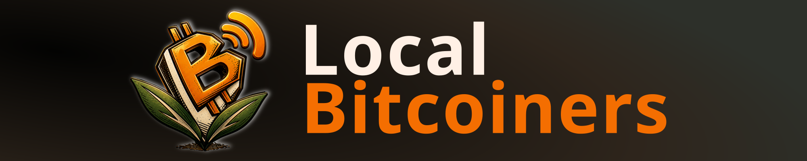

Couldn't load the latest episode right now. Listen directly on Fountain →
Auto-rotates · swipe, or tap a dot, to switch boards.
Most-boosted episodes, all-time
Most episodes boosted — this is our core group
Top 5 biggest boosts of all time
Loading community events…
Loading community listings…
Loading podcast boosts…
Loading community articles…
Loading recent boosts…
Loading merch…
Listen, boost, download.
Listen →The people powering the show.
Meet them →Sats, charts & leaderboards.
Dig in →Every boost & message.
Read them →Listener-boosted meetups near you.
Find one →Tees & stickers. Pay in sats.
Shop →Open-source meetup playbook.
Browse →Spot something broken? Tell us.
Let us know →